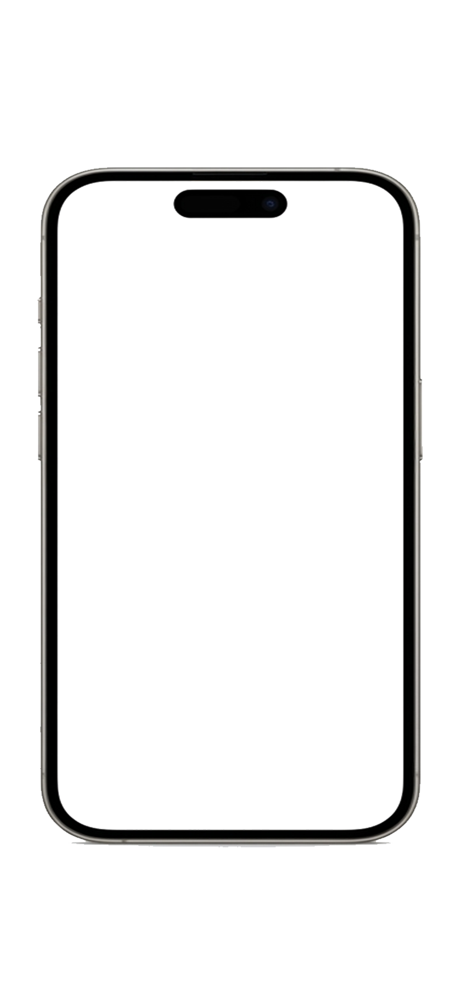

ذاكر… منصتك الذكية للمذاكرة



اسحب داخل شاشة الهاتف للتنقل
حمِّل تطبيق ذاكر الآن — واحصل على اشتراك شهر مجاني
اختبارات تفاعلية • تتبع التقدم • جداول دراسية • ملخصات سريعة • يعمل بدون إنترنت
⬇ اضغط لتحميل التطبيق